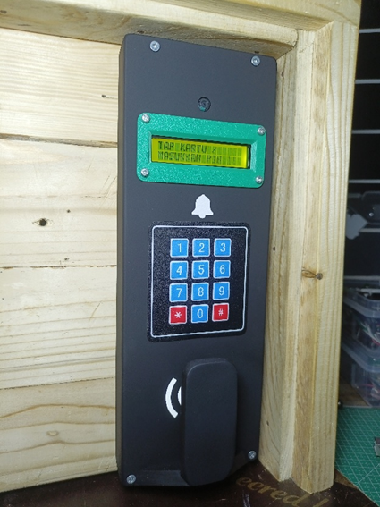

Juara 1 AMCC 2025Sistem Keamanan Pintu Depan ESP32
Proyek smart door lock dan smart bell yang mengintegrasikan RFID RC522, ESP32, dan ESP32-CAM. Mendukung autentikasi kartu RFID/PIN, kontrol jarak jauh via Blynk IoT, serta pengiriman foto tamu otomatis ke bot Telegram saat bel ditekan.
ESP32
ESP32-CAM
RFID RC522
Blynk IoT
Telegram Bot